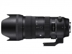

器材库 > 35mm画幅AF变焦镜头 / DG 70-200/2.8 OS HSM / Sports > DG 70-200/2.8 OS HSM | Sports

详细规格
镜头类型
远摄变焦镜头
发布日期
2018-09-26
焦距
70mm-200mm
最大光圈
f/2.8
最小光圈
f/22
视角（对角）
34.3° - 12.3°
镜头结构
24片/22组
低/超低色散镜片
10片
光圈叶片
11片
最近对焦距离
120cm
最大放大倍率
1:4.8
驱动马达
HSM（超声波马达）
滤镜口径
82mm
镜头卡口
Canon EF, Nikon F, Sigma SA
防抖
是
颜色
黑色
尺寸
94.2×202.9mm
重量
1805g
附件
镜头包，带锁定装置的花瓣式遮光罩 LH914-01，内置脚架环（不可拆卸）
备注
规格为适马卡口版本
该产品暂无存档的网友点评
产品图 / 样片
DG 70-200/2.8 OS HSM | Sports
评测 / 相关文章
- ［资讯］PhotoKina 2018适马展台图赏 （存档）
- ［资讯］适马正式发布五支新镜头 （存档）
相关文章
- ［资讯］PhotoKina 2018适马展台图赏 （存档）
- ［资讯］适马正式发布五支新镜头 （存档）